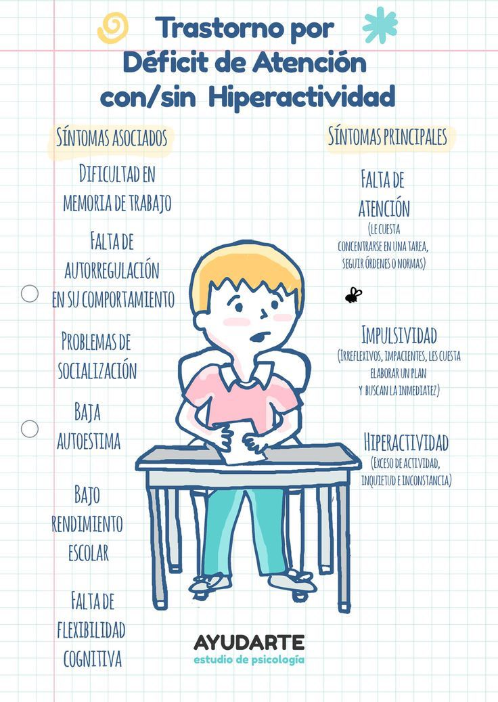
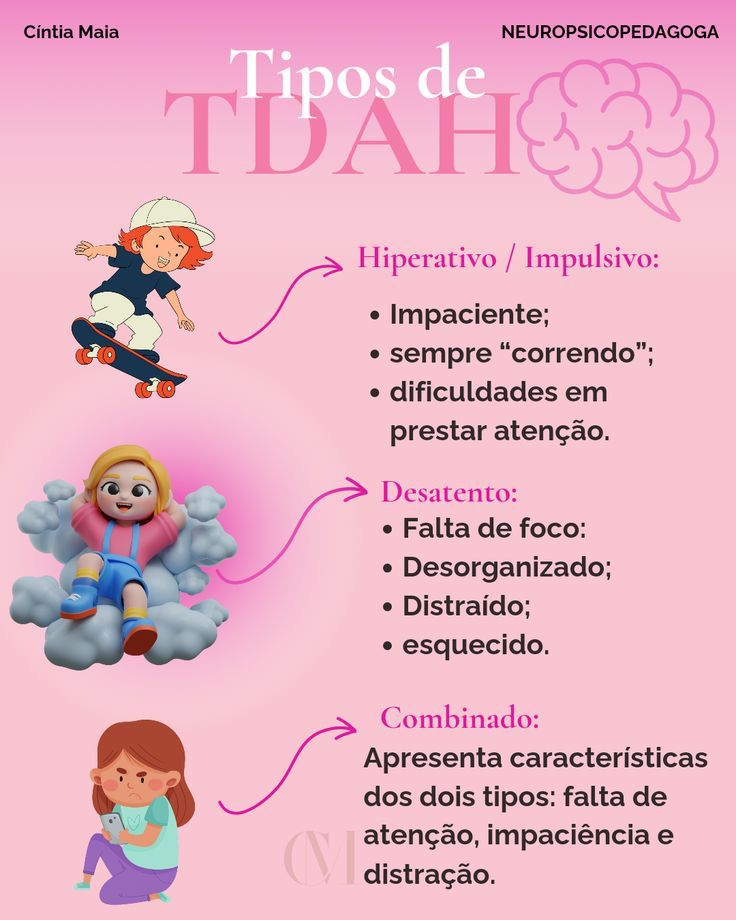

Impacto de la tecnología en niños con capacidades diversas
Dentro del ámbito especial, hay varios trastornos que pueden resultar en lo que actualmente se conoce como
necesidades educativas especiales.
La inclusión de los trastornos del espectro del autismo y de la clásica discapacidad intelectual se apoya
en las puntuaciones obtenidas en los diferentes parámetros cognitivos: atención, memoria, funciones ejecutivas,
psicomotricidad, lenguaje, percepción y psicomotricidad. En concreto, la atención es un parámetro cognitivo que
está relacionado con el resto, ya que si no es adecuada no se puede captar información. La atención es un
parámetro
cognitivo que es necesario trabajar en niños con trastornos del desarrollo, como es el caso del autismo, al
igual que
en el TDI. En lo que respecta a la atención, hay particulares trastornos y necesidades de trabajo en su
desarrollo en
niños con ambos trastornos. Tenemos que hacer una distinción entre los distintos tipos de atención con el fin de
comprender mejor sus necesidades. Los principales tipos de atención son: selectiva, sostenida, dividida y
alternante.
El principal problema de la atención en los niños con autismo es la selectiva, es decir, la capacidad para
elegir los
elementos que nos afectan en un momento determinado. Tienen problemas para mantener la atención en una tarea
determinada.
En lo que respecta a los niños con TDI, el principal problema radica en la falta de atención sostenida. Nos
referimos
a la capacidad para mantener la atención en tareas más o menos prolongadas a lo largo del tiempo. Según algunos
estudios,
también tienen dificultades en la atención selectiva, pero su principal problema es el tiempo de atención que es
reducido
y la facilidad de distracción.
La tecnología puede tener efectos positivos y negativos en niños con capacidades diferentes, dependiendo de cómo
se utilice y bajo qué contexto. Aquí una visión general:
Impactos Positivos
1. Herramientas de apoyo educativo:
• Aplicaciones interactivas, videos educativos y software especializado ayudan a reforzar el aprendizaje
adaptado a las necesidades de cada niño.
• Por ejemplo, niños con dislexia pueden beneficiarse de herramientas de lectura asistida, mientras que niños
con autismo pueden usar apps con pictogramas para mejorar la comunicación.
2. Estimulación cognitiva:
• Juegos y programas diseñados para mejorar la memoria, la atención y el razonamiento lógico.
3. Inclusión y autonomía:
• Tecnología asistiva (como lectores de pantalla, teclados adaptados, dispositivos de seguimiento ocular)
permite que niños con discapacidades motoras o visuales participen activamente en la educación y en su entorno.
4. Comunicación aumentativa y alternativa (CAA):
• Tablets con apps como Proloquo2Go ayudan a niños no verbales a comunicarse mediante imágenes o texto a voz.
Impactos Negativos
1. Exposición prolongada sin supervisión:
• Puede llevar a adicción, aislamiento social o retraso en el desarrollo de habilidades sociales.
2. Reducción de interacción humana:
• Los niños con autismo, por ejemplo, necesitan trabajar la interacción social real, y un uso excesivo de
tecnología puede disminuir esas oportunidades.
3. Problemas de concentración:
• El uso excesivo de pantallas, especialmente con contenido muy rápido y estimulante, puede exacerbar los
síntomas de TDAH.
🧠 ¿La tecnología causa TDAH, autismo u otros trastornos?
No los causa, pero puede influir negativamente en síntomas existentes.
1. TDAH (Trastorno por Déficit de Atención con Hiperactividad):
• El uso constante de pantallas puede fomentar la necesidad de gratificación instantánea, lo que empeora la
atención sostenida.
• Muchos estudios sugieren una correlación entre el tiempo excesivo frente a pantallas y aumento de síntomas de
atención dispersa, pero no una relación causal directa.
2. TEA (Trastorno del Espectro Autista):
• La tecnología no causa autismo, ya que este es un trastorno del neurodesarrollo con base genética y
biológica.
• Sin embargo, un uso mal regulado puede interferir con el desarrollo de habilidades sociales y del lenguaje si
reemplaza las interacciones humanas necesarias para el desarrollo.


Recomendaciones para el uso adecuado de tecnología:
Para padres y educadores
👀 Supervisar tiempo frente a pantallas
⏳ Limitar el uso según edad (la OMS recomienda 1 hora o menos al día para menores de 5 años)
🤝 Promover juegos y comunicación presencial
Para terapeutas
💬 Usar tecnología como herramienta de apoyo, no como reemplazo
👨⚕ Integrar apps validadas en terapias
🧩 Adaptar el contenido según el perfil cognitivo del niño